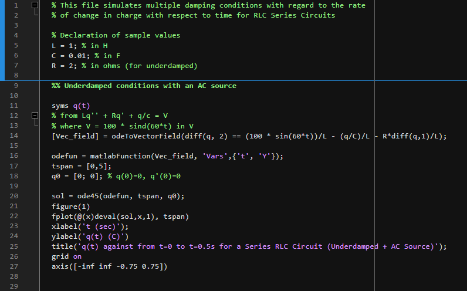
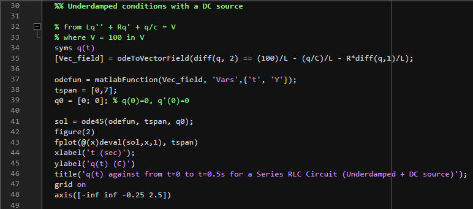
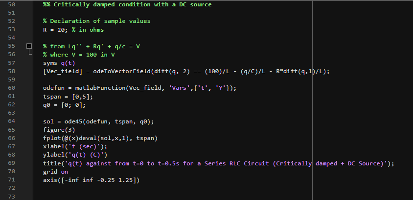
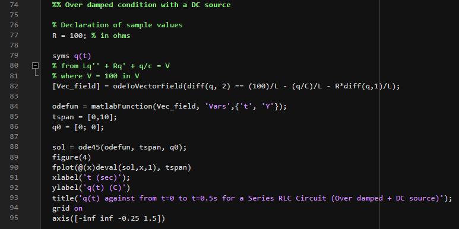

MATLAB Code
The simulation code and original screenshots from the project submission.
MATLAB Simulation & Code
Initial MATLAB simulation code for the RLC series circuit project.
Download (.m)Code Screenshots
The original MATLAB code sheets from the project submission are embedded below for completeness:

Figure e: MATLAB script lines 1-27 detailing variable initialization and Case 1 simulation functions.
Figure f: MATLAB script lines 28-48 depicting Case 2 setup and integration options.
Figure g: MATLAB script lines 49-71 representing Case 3 critical damping solver integration.
Figure h: MATLAB script lines 72-95 showing Case 4 overdamped simulation and final plot configurations.